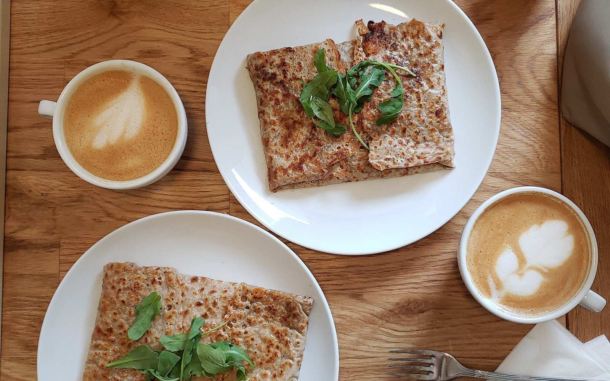
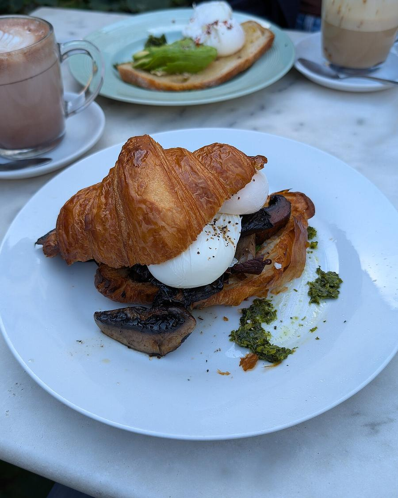
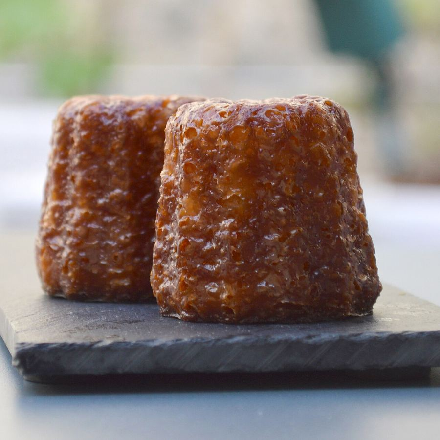
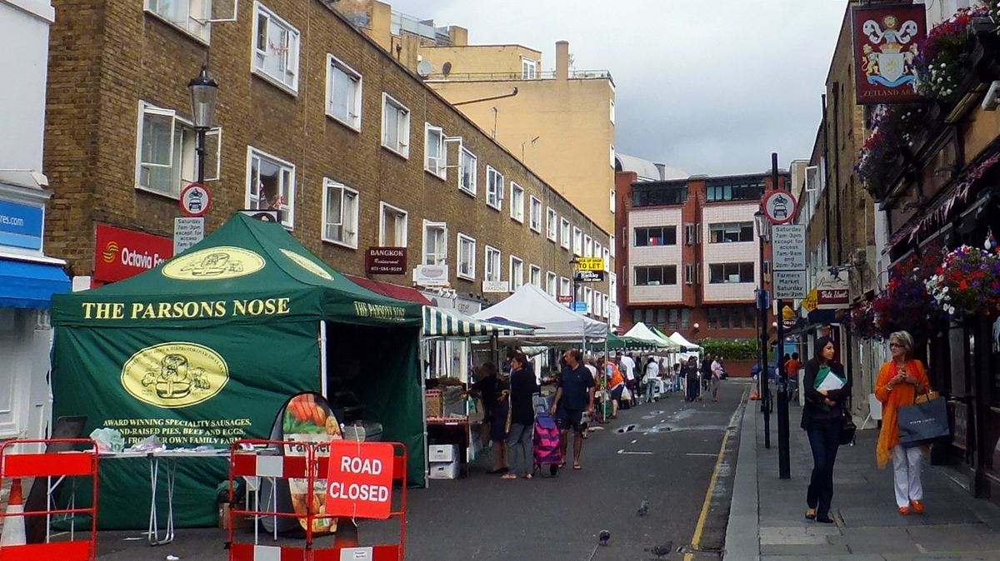

Suzette, French crêperie and coffee shop in South Kensington

- La galetteBuckwheat, savoury, straight from the griddle
- La crêpeFrom butter & sugar to Grand Marnier
- Le caféEspresso classics, dairy alternatives
L’esprit
A small French crêperie and coffee shop, run with Parisian warmth on Bute Street, South Kensington.
Suzette is independent and French-run. Savoury galettes and sweet crêpes are made to order, alongside French pastries such as croissants and canelés, breakfast plates and a full coffee bar.
Gluten-free and dairy-free requests can be accommodated, dogs are welcome, and on Saturdays the tables look out over the Bute Street market.


La carte
The menu
From Suzette’s published menu. Prices are shown in the café.
GalettesSavoury galettes
- ClassiqueParisian ham, Emmental; add an egg
- GoatyGoat’s cheese, sun-dried tomatoes, red onion chutney, baby spinach
- PotagèreEmmental, tomatoes, spinach, garlic
- MozzaMozzarella, tomatoes, oregano, prosciutto
- VeganVegan cheese, spinach, garlic, tomatoes, mushroom
- BreakfastBacon, Emmental, mushrooms, egg
- LuxuryBéchamel, mushroom, ham, Emmental
- Nordic Bute Street specialCream cheese, salmon, dill, rocket, lemon
- Shroom Bute Street specialMushrooms, Emmental, garlic, rocket
CrêpesSweet crêpes
- Butter & sugar
- Lemon & sugar
- Cinnamon & sugar
- Nutella
- Belgian chocolateMilk or dark
- Salted butter caramel
- Chestnut cream
- SuzetteLemon, sugar & Grand Marnier
- CanadienneMaple syrup, banana & bacon
Petit-déjeunerBreakfast
- The Suzette breakfastEggs, bacon, mushroom, tomatoes & baguette
- OmeletteFree-range organic eggs, four toppings of your choice, bread & butter
- Bacon brioche
- Greek yoghurtFruit, granola & honey
- Granola or muesli
- Seasonal fruit salad
CaféCoffee & drinks
- Espresso · macchiato · cortado
- Americano · flat white · cappuccino
- Mocha · hot chocolate · iced coffee
- Almond, oat, coconut & soya milk
- Fresh orange juice · seasonal smoothie
- Red, white & rosé wine

Nous trouver
16 Bute Street
South Kensington
London SW7 3EX
A short walk from South Kensington station.
Horaires
| Monday | 8.30am – 6pm |
|---|---|
| Tuesday | 8.30am – 6pm |
| Wednesday | 8.30am – 9pm |
| Thursday | 8am – 9pm |
| Friday | 8.30am – 9.30pm |
| Saturday | 9am – 9.30pm |
| Sunday | 10am – 9pm |
Hours as listed on Google; to be confirmed with Suzette before launch.